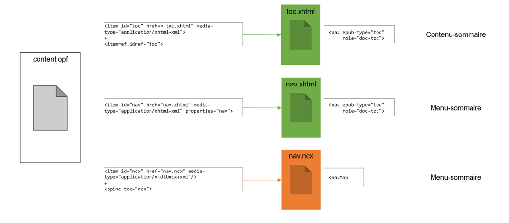
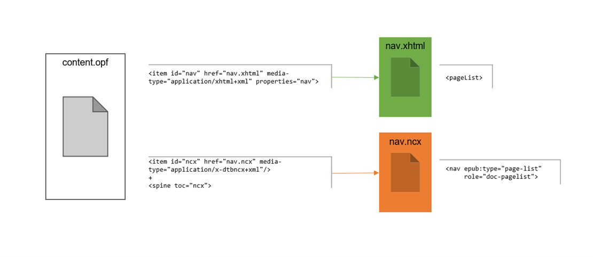
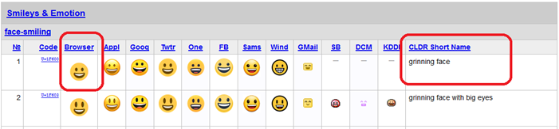
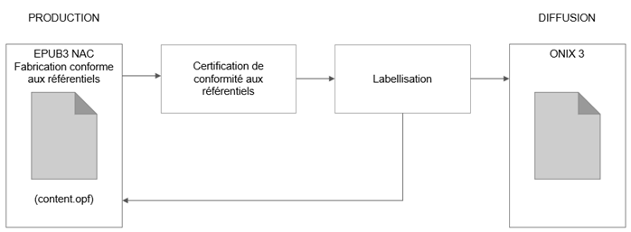

L’accessibilité des livres numériques aux personnes en situation de handicap est devenue une obligation légale du fait de la directive européenne. Les acteurs de l’écosystème concernés doivent se conformer à ce cadre légal.
C’est pourquoi le groupe Normes & Standards de la commission Numérique du Syndicat national de l’édition a produit, maintient et développe la charte technique pour accompagner les éditeurs dans la production de livres répondant aux standards d’accessibilité.
L’élaboration de cette charte fait converger les efforts de tous les acteurs (commanditaires et prestataires) pour trouver des solutions d’accessibilité, articulées autour du format EPUB.
La charte a pour objet de partager, en français et de manière pédagogique, les solutions techniques à mettre en œuvre. Elle sera actualisée en fonction des évolutions des technologies et des référentiels d’accessibilité.
Les publications de type « texte », dont la maquette permet de produire facilement un EPUB recomposable, constituent naturellement le premier jalon de cette production nativement accessible.
On notera que les standards d’accessibilité ne définissent pas de nouveaux formats, mais seulement de bonnes pratiques dans l’usage de formats existants. L’immense majorité de ces bonnes pratiques est d’ailleurs déjà respectée par les prestataires EPUB qui ont industrialisé leur chaîne de production.
La charte inclut systématiquement les liens vers les référentiels d’accessibilité à respecter.
À cela trois raisons :
La première relève d’une volonté pédagogique. Le SNE souhaite aider tous les acteurs de la chaîne du livre à s’approprier ces référentiels.
La deuxième est un échange de bons procédés avec les prestataires. Ils sont invités à utiliser librement cette charte pour réaliser des prestations d’EPUB nativement accessibles.
La troisième est qu’il faut s’approprier complètement les exigences posées par les différents référentiels d’accessibilité, pour que les EPUB nativement accessibles soient conformes à la loi.
Objectifs opérationnels
Le but de la charte du SNE n’est pas de réécrire les différents référentiels d’accessibilité, mais d’aider les acteurs de la production d’EPUB nativement accessibles à se mettre en conformité avec les exigences de ces référentiels.
La charte apporte des éclaircissements sur tout ce qui fait question dans les standards d’accessibilité applicables aux EPUB : éléments appelant des choix stratégiques et technologiques, éléments difficiles à comprendre ou sujets à interprétation.
Cette charte d’accessibilité s’appuie sur l’expérience acquise depuis 2016 :
par les membres du groupe normes et standards du SNE (cf. commission numérique) ;
par les prestataires.
Elle vaut pour tous les EPUB fabriqués, quels que soient le prestataire choisi et le processus de fabrication utilisé, car elle définit la cible, pas les moyens.
Ce document est destiné aux équipes techniques qui maîtrisent les technologies de l’édition numérique notamment EPUB, XHTML, CSS, XML, MathML et SVG.
Organisation du document
Pour faciliter le travail d’appropriation et de développement informatique, cette spécification contient :
une organisation thématique de l’information (cf. plan) ;
des tableaux de spécification fonctionnelle et technique synthétiques (cf. tableaux bleus) ;
des exemples d’implémentation (cf. aperçu de code) ;
des références systématiques et synthétiques aux référentiels d’accessibilité, en anglais et en français lorsqu’une traduction existe, avec précision du niveau WCAG correspondant (cf. tableaux orange).
Nous vous recommandons aussi de télécharger aussi l’EPUB nativement accessible créé par le groupe Normes et Standards du SNE et mis à disposition sur son site avec d’autres ressources
Évolution du document
L'utilisation de cette charte est sous licence : licences Creative Commons
Historique du document
v1.0 - 12/2022
v1.2 - 06/2021
v1.3 - 03/2025
Référentiels d’accessibilité
Les référentiels d’accessibilité sont des standards qui définissent les exigences fonctionnelles et les critères de succès techniques à remplir.
Il existe de nombreux référentiels d’accessibilité. Tous ne s’appliquent pas aux EPUB destinés au marché grand public français. Afin de lever toute ambiguïté et d’éviter au prestataire de réaliser du travail inutile ou inapproprié, voici un rappel des référentiels d’accessibilité :
qui s’appliquent aux EPUB grand public du marché français ;
qui ne s’appliquent pas aux EPUB grand public du marché français.
Référentiels APPLICABLES aux EPUB NAC du marché grand public français
Voici les seuls référentiels qui s’appliquent aux EPUB grand public du marché français à date et avec lesquels l’éditeur et son prestataire doivent se mettre en conformité pour être vraiment accessibles.
Services en ligne de l’État, des collectivités territoriales et des établissements publics qui en dépendent, pour web / télévision / téléphonie, et structures privées réalisant un chiffre d’affaires supérieur à 250 millions d’euros
2 niveaux RGAA
Rappel : les EPUB s’appuient sur les technologies Web (cf. XHTML, XML, MathML, SVG, CSS). Toutes les contraintes d’accessibilité qui valent pour ces technologies Web valent aussi pour les EPUB.
La spécification de l’IDPF s’ajoute aux deux standards d’accessibilité du W3C (WCAG et WAI-ARIA). Elle explique ou complète ce qui concerne les EPUB dans les spécifications d’accessibilité des technologies Web du W3C.
Ce faisant, il y a parfois un recouvrement partiel entre les critères EAT/WCAG/ARIA. Vous le verrez clairement apparaître dans les tableaux de synthèse sur les standards d’accessibilité qui vous sont présentés.
Référentiels NON APPLICABLES aux EPUB du marché grand public français
Pour rappel, voici les référentiels d’accessibilité les plus connus avec lesquels l’éditeur et son prestataire n’ont PAS à se mettre en conformité pour le marché EPUB grand public français.
Services en ligne de l’État, des collectivités territoriales et des établissements publics qui en dépendent, pour web / télévision / téléphonie, et structures privées réalisant un chiffre d’affaires inférieur à 250 millions d’euros
2 niveaux RGAA
A2RNE
Ministère éducation nationale
Ressources numériques pour l’école
5 niveaux
LIA
Fondazione LIA
EPUB – marché grand public italien
1 niveau : LIA (cf. ONIX code list 196)
Relation aux référentiels d’accessibilité
La production des EPUB NAC doit être conforme aux référentiels d’accessibilité référencés dans ce document.
Auto-déclaration versus certification de conformité
Dans un premier temps, lors de la mise en place des processus de production EPUB NAC, les éditeurs se limiteront à une auto-déclaration de conformité aux référentiels dans nos métadonnées EPUB (destinées au système de lecture).
Ce n’est que dans un deuxième temps (dont le calendrier n’est pas encore arrêté) qu’ils pourront mettre en place, avec le ministère de la Culture, une labellisation par un organisme tiers (compétent et indépendant) conformément aux référentiels internationaux.
L’indication de l’organisme certificateur et d’un nouveau label dans les métadonnées d’accessibilité n’impacte que deux valeurs de métadonnées d’accessibilité de l’OPF. La certification-labellisation ne bouleversera donc pas l’implémentation de l’OPF.
Périmètre, niveau et caractéristiques d’accessibilité
Il est impossible d’imposer à toutes les maisons d’édition :
un même périmètre de catalogue de titres EPUB NAC ;
un même niveau d’accessibilité WCAG ;
les mêmes caractéristiques détaillées d’accessibilité.
Ce faisant, pour permettre à chacun de se positionner au mieux pour une accessibilité utile, soutenable et labellisable, la charte SNE adopte une stratégie modulaire.
Elle propose des choix d’implémentation par défaut (sur lesquels l’éditorial, la fabrication et le prestataire pourront s’appuyer) ;
Elle indique localement quelles sont les marges de manœuvre de l’éditorial et de la fabrication, s’ils souhaitent baisser ou au contraire augmenter l’accessibilité de leurs EPUB nativement accessibles (pour des services qu’ils jugent soit inutiles, soit indispensables au lectorat empêché de lire).
Niveau d’accessibilité WCAG
Les maisons d’édition ont dans l’absolu le choix entre les trois niveaux d’accessibilité du WCAG : A, AA, AAA. Au moment du devis ou de la commande, elles indiqueront au prestataire le niveau d’accessibilité WCAG souhaité. Dans le cas où la maison d’édition ne pourrait / ne voudrait pas choisir son niveau WCAG, un niveau par défaut est défini par la charte SNE.
Niveau WCAG
Commentaire
Niveau A
Niveau sur demande expresse, car risque de non-éligibilité française et européenne à terme.
Niveau AA
Niveau par défaut
Niveau AAA
Niveau sur demande expresse, car surcoût de fabrication.
Caractéristiques détaillées d’accessibilité
Pour certains types de contenus éditoriaux, les maisons d’édition ont une marge de manœuvre dans la définition des caractéristiques détaillées d’accessibilité. Voici les contenus auxquels des choix peuvent s’appliquer :
Caractéristique détaillée
Commentaire
Images – description longue
Uniquement sur demande expresse. Non demandé par défaut.
Formules MathML – texte alternatif
Uniquement sur demande expresse. Non demandé par défaut.
Le détail de ce tableau est repris dans la suite du document.
Pour tous les autres types de contenus éditoriaux en revanche, la charte est contraignante.
Format EPUB
Propriété
Valeur
Version EPUB
3.0 et 3.2
Ne pas utiliser la version 3.1, car pas rétrocompatible avec la 3.0 et pas supportée par EPUBCheck de surcroît.
Type de mise en page EPUB
Recomposable (reflowable)
Multiple rendition
non
Architecture des dossiers et nomenclature de fichiers
L’accessibilité n’impose aucune contrainte particulière dans l’architecture des dossiers et dans la nomenclature des fichiers. La nomenclature des fichiers utilisée dans la charte est conventionnelle et pédagogique, mais n’a pas valeur d’obligation.
Nom de fichier
Contenu
nav.xhtml
Implémente la version EPUB 3 de tous les éléments de navigation (dont le menu-sommaire et la liste de pages).
nav.ncx
Implémente la version rétrocompatible EPUB 2 de tous les éléments de navigation (dont le menu-sommaire et la liste de pages).
Devra disparaître à terme.
toc.xhtml
Implémente le contenu-sommaire.
Découpage en documents XHTML
Dans le cas de parties ou de chapitres volumineux, il arrive qu’il soit nécessaire de découper la partie ou le chapitre en plusieurs fichiers XHTML.
Bien respecter les consignes de structuration XHTML dans la gestion du point de reprise entre les fichiers qui s’enchaînent pour que cette reprise soit accessible. D’autant que cela simplifiera le travail, car, lorsqu’on fait l’effort d’être accessible, on pèche en général par excès de zèle sur le sujet.
Dans un EPUB, les fichiers de contenu sont structurés en HTML5 et affichés via une CSS.
Les technologies d’assistance, même articulées à un « lecteur d’écran », n’exploitent pas l’affichage des éléments via la feuille de style. Aucune propriété de CSS (dont propriétés de mise en page et de placement de blocs) ne leur est accessible. Elles parcourent uniquement le DOM (Document Object Model) modélisant la structure XHTML chargée en mémoire. Elles restituent, par le biais de la synthèse vocale ou de l’affichage braille, le contenu des éléments parcourus, suivant leur seul ordre d’apparition dans l’arbre DOM.
L’ordre des éléments placés dans les fichiers XHTML (à l’origine du DOM) doit donc impérativement respecter un ordre logique – ordre qui suit la volonté de l’éditeur et/ou de l’auteur. Lui seul pourra garantir la lisibilité des contenus aux usagers des technologies d’assistance.
Tous les éléments XHTML qu’une CSS positionne via des propriétés de composition de page (cf. display, position et float) devront faire l’objet d’une attention toute particulière. Cela peut être notamment le cas des éléments <section>, <article>, <aside>, <table>, <fig>, <img>, <span>.
Éléments de navigation
Repères (alias landmarks)
Dans le fichier XML de navigation (cf. nav.xhtml), en plus du sommaire et de la liste de pages, les grands repères de navigation au sein de l’EPUB doivent être listés dans les « landmarks » (cf. balise <nav> dont l’attribut epub:type vaut landmarks).
Voici les grands repères de navigation à lister dans le même ordre que dans la publication papier :
Fonctionnel
Technique
Statut des attributs
Commentaire
Repère cible
Élément
Attributs
@epub:type
@role ARIA
Premier fichier du corps du livre
a
bodymatter
néant
obligatoire
La couverture peut également être choisie comme point de départ universel pour le début de la lecture.
Liste de pages
a
page-list
doc-pagelist
obligatoire
Table des matières
a
toc
doc-toc
obligatoire
Bibliographie
a
bibliography
doc-bibliography
facultatif
Seulement si la publication papier contient une bibliographie.
Glossaire / lexique
a
glossary
doc-glossary
facultatif
Seulement si la publication papier contient un glossaire / lexique.
Index
a
index
doc-index
facultatif
Seulement si la publication papier contient un index.
Table des tableaux
a
lot
néant
facultatif
Seulement si présent dans le papier et/ou demandé par l’éditeur dans la version EPUB.
Pour l’epub:type=landmarks, aucun rôle ARIA (Web ou DPUB) ne doit être posé, car aucun rôle ARIA n’a été associé par l’IDPF à cette valeur dans sa table de correspondance epub:type / role ARIA.
La table des matières (ou le sommaire) est un des deux moyens obligatoires d’accéder au contenu de la publication (conjointement avec la liste de pages).
Dans les EPUB, on distingue fonctionnellement le « menu-sommaire » et le « contenu-sommaire ».
Le « menu-sommaire », alias « table des matières technique (machine readable TOC) », est le sommaire qui apparaît dans le menu de navigation du système de lecture. Certains d’entre eux ne savent pas l’afficher en grands caractères et ne permettent pas aux technologies d’assistance d’interagir avec eux. Ce faisant, le menu-sommaire n’est pas toujours accessible.
Le « contenu-sommaire » est le contenu XHTML qui apparaît pendant la lecture de la publication (en tournant ses pages). Il peut être affiché en grands caractères et les hyperliens vers les pages de contenu sont exploitables par les technologies d’assistance. Ce faisant, il est lui toujours accessible et devient fonctionnellement obligatoire .
Voici comment la technique s’articule avec le fonctionnel au format EPUB 3 nativement accessible. En vert ce qui est nécessaire à l’accessibilité. En marron, ce qui est nécessaire à l’interopérabilité et qui pourra disparaître à terme. À date, l’ensemble (marron + vert) doit être produit dans les EPUB NAC.

Fichier(s)
Commentaire
content.opf
Adresse les deux versions (version rétrocompatible EPUB 2 + version EPUB 3) du menu-sommaire.
nav.ncx
Implémente la version rétrocompatible EPUB 2 de tous les éléments de navigation (dont le menu-sommaire, mais pas seulement).
Pourra disparaître à terme.
nav.xhtml
Implémente la version EPUB 3 de tous les éléments de navigation (dont le menu-sommaire, mais pas seulement).
toc.xhtml
Implémente le contenu-sommaire.
NB : reprend exactement la partie TOC du menu-sommaire.
Le menu-sommaire et le contenu-sommaire doivent offrir les mêmes points d’entrée pour naviguer dans le contenu de la publication. De plus, tous les chapitres doivent être navigables, même s’ils ne comportent pas de titre dans la publication papier. Dans ce cas, l’éditeur donnera au prestataire ses instructions pour libeller les titres de chapitre dans la version numérique.
Pour être accessibles, les fichiers nav.xhtml et toc.xhtml doivent par ailleurs faire l’objet d’un balisage sémantique XHTML 5. Ils doivent utiliser la balise <nav>, ainsi que les attributs sémantiques @epub:type et @role ARIA (si équivalent).
La fourniture de la liste de pages devient obligatoire. Elle doit être implémentée sous forme EPUB 3 (cf. <nav>) afin de garantir l’accessibilité aux technologies d’assistance. Tant que les systèmes de lecture et les revendeurs l’exigeront, elle doit aussi être implémentée sous forme rétrocompatible EPUB 2 (qui pourra disparaître à terme).

Fichier(s)
Commentaire
content.opf
Adresse les deux versions (version rétrocompatible EPUB 2 + version EPUB 3) de la liste de pages.
nav.ncx
Implémente la version rétrocompatible EPUB 2 de tous les éléments de navigation (dont la liste de pages, mais pas seulement).
Pourra disparaître à terme.
nav.xhtml
Implémente la version EPUB 3 de tous les éléments de navigation (dont la liste de pages, mais pas seulement).
La liste de pages fait référence aux sauts de page qui sont posés dans l’EPUB. Voir § Sauts de page pour les détails sur la politique de gestion des sauts de pages.
Afin de faciliter une navigation rapide dans les contenus aux déficients visuels, on utilisera la référence de type text du guide OPF pour donner un accès immédiat aux premières pages de lecture stricto sensu (pour leur permettre de sauter les pages de titre, couverture et de copyright typiquement).
NB : ce pointeur était déjà exigé par les contrôles Apple au format EPUB fixed layout. On l’étend au format EPUB reflowable.
L’encodage des caractères doit être réalisé en utf-8.
*.xhtml<?xml version="1.0" encoding="utf-8"?>
De plus, TOUS les caractères spéciaux (ligatures ainsi que caractères appartenant à des alphabets non latins ) doivent être modélisés par le bon code caractère Unicode (directement ou via entité caractère correspondante). Il est interdit de les modéliser par surcharge de caractère ASCII ou par substitution d’une image au dit caractère. Cela perturberait les technologies d’assistance (respectivement altération de mot ou coupure de mot pour la synthèse vocale et la traduction braille), ainsi que l’agrandissement de caractères (les images-glyphes ne peuvent pas être agrandies).
Exemple
Fonctionnel
Technique
Famille de caractères
Caractère spécial
Unicode
Entité numérique hexadécimale
Alphabet latin
œ
U+0153
œ
Alphabet grec
α
U+03B1
α
Alphabet phonétique international (API)
θ
U+03B8
θ
Caractères spéciaux mathématiques
∀
U+2200
∀
Ce faisant, il faut s’assurer qu’une police sachant afficher correctement ces codes caractères dans la plage Unicode est bien disponible pour le système de lecture (soit police préinstallée sur le matériel de lecture, soit police embarquée dans l’EPUB). Voir § Feuille de styles pour plus de détails.
Chaque document XHTML doit renseigner une balise <title> dans son <head>. Ce titre (qui n’est pas affiché) sera utilisé par les technologies d’assistance pour permettre à leurs usagers de déterminer s’ils veulent lire la page ou non (et la zaper le cas échéant).
La valeur du <title> est déterminée par le contexte du document. Ne pas y mettre le titre de la publication, qui non seulement ne varie pas (et que l’on connaît déjà lorsqu’on a commencé la lecture de l’EPUB), mais qui ne permet pas non plus de discriminer les documents. Le titre de la publication ne serait pas faux, mais parasiterait les technologies d’assistance en répétant constamment une même information connue et non discriminante. C’est d’ailleurs pourquoi le WCAG stipule bien que le <title> du <head> doit décrire le contenu du document lui-même et pas juste celui du site Web auquel appartient le document (site assimilable à nos publications EPUB).
Dans la plupart des cas, la valeur du <title> est la même que celle du <h*> du document (ex. : Chapitre 1 tout court, s’il n’y a pas de parties ni de volumes au-dessus). Dans le cas de parties volumineuses découpées en plusieurs documents, la valeur du <title> est le titre de la hiérarchie qui a subi le découpage - en allant du particulier au général (ex. : Chapitre 1 – Partie 2).
Dans le cas des documents qui n’ont pas de headings <h*> :
si ce document est pointé par une rubrique de sommaire, alors reprendre le libellé de la rubrique de sommaire qui pointe dessus ;
sinon, créer un titre factice « suite de la page précédente ».
Les règles de vocalisation ou de traduction braille ne sont pas les mêmes d’une langue à l’autre. Pour une bonne exploitation du texte par les technologies d’assistance, la langue doit être indiquée systématiquement et explicitement :
dans les métadonnées de la publication, pour permettre au public aveugle de vérifier qu’il dispose bien d’un moteur de synthèse vocale ou de transcription braille pour la langue de ce titre ;
dans les contenus éditoriaux pour guider globalement ou finement ces technologies d’assistance.
Le signalement de la langue est modélisé de la manière suivante.
la langue dite « régionale » dans les contenus éditoriaux, qui permet de préciser l’accent souhaité.
Pour cela, on utilise le standard RFC 3066 qui permet de donner un code de langue simple ou composite (code langue ISO 639-1 sur 2 lettres minuscules + « - » + code pays ISO_3166-1 sur 2 lettres majuscules).
Fonctionnel
Technique
Langue
Accent
Encodage RFC 3066
Défaut
français
français
fr-FR
+
québécois
fr-CA
-
belge
fr-BE
-
anglais
américain
en-US
+
britannique
en-GB
-
canadien
en-CA
-
australien
en-AU
-
Dans les contenus éditoriaux, l’indication de langue se fait en fonction de la portée, au niveau hiérarchique pertinent le plus élevé possible (par souci d’économie et de cohérence).
Exemples
content.opf<dc:language>fr</dc:language>
*.xhtml<html xmlns="http://www.w3.org/1999/xhtml" xmlns:epub="https://idpf.org/2007/ops" lang="fr-FR" xml:lang="fr-FR">
…
<p>…selon le rapport annuel de l’agence fédérale américaine <span lang="en-US">National Oceanic and Atmospheric Administration</span> (NOAA).</p>
En EPUB 3, les attributs @epub:type et @role ARIA doivent être doublés. En effet, si ces deux familles d’attributs sont destinées aux « machines » (et pas aux humains), elles n’ont pas la même vocation.
Attribut
« Machine » ciblée
Usage ciblé
epub:type
Système de lecture
Fonctionnalités de lecture offertes au lecteur par le système de lecture dans son interface visuelle.
Rôle ARIA
Technologies d’assistance, dont la navigation clavier, le lecteur d’écran pour la synthèse vocale et la transcription braille, dont aussi les périphériques dédiés aux personnes handicapées (substituts au clavier ou à la souris standards).
Accessibilité aux personnes en situation de handicap.
On notera que la pose des rôles ARIA n’est pas limitée aux seuls contenus interactifs.
Les très nombreux attributs sémantiques définis dans les formats EPUB et ARIA (web et DPUB) ne sont pas tous à renseigner. À cela plusieurs raisons. Certains sont redondants avec le contenu textuel (ex. : « Préface » et @epub:type=foreword). D’autres sont redondants avec le balisage sémantique HTML5 maintenant disponible en EPUB 3 (ex. : balise <figure> et @epub:type=figure). D’autres encore ne sont pas exploités par les systèmes de lecture, ni par les technologies d’assistance auxquels ils sont destinés (du moins tels qu’ils existent et que nous les connaissons aujourd’hui). Pour d’autres enfin, leur utilité future réelle semble douteuse.
Ce faisant, voici la sélection que nous avons faite dans ces vocabulaires, afin de rendre des services avérés à nos lecteurs. Cette sélection pourra être appelée à évoluer avec l’évolution des systèmes de lecture, des technologies d’assistance et des recommandations des organismes représentant les publics empêchés de lire.
Nous nous appuyons sur la table de correspondance epub:type / WAI-ARIA role produite par l’IDPF pour mettre en correspondance les deux systèmes d’attributs.
Fonctionnel
Technique
Attributs
Statut des attributs
@epub:type
@role ARIA
Appel de note
noteref
doc-noteref
obligatoire
Chapitre
chapter
doc-chapter
obligatoire
Cœur de publication
bodymatter
néant
recommandé
Corps de note
footnote
doc-footnote
obligatoire
Couverture
cover
doc-cover
obligatoire
Dédicace
dedication
doc-dedication
recommandé
Épigraphe
epigraph
doc-epigraph
recommandé
Index
index
doc-index
obligatoire
Contenu de lexique / glossaire
glossary
doc-glossary
obligatoire, sauf sur aside
Malle arrière
backmatter
néant
recommandé
Malle avant
frontmatter
néant
recommandé
Page de titre
titlepage
néant
obligatoire
Partie
part
doc-part
obligatoire
Saut de page
pagebreak
doc-pagebreak
obligatoire
Table des audios
loa
néant
obligatoire
Table des illustrations
loi
néant
obligatoire
Table des matières
toc
doc-toc
obligatoire
Table des tableaux
lot
néant
obligatoire
Table des vidéos
lov
néant
obligatoire
Volume
volume
néant
obligatoire
Qui peut le plus peut le moins. Si l’outil de production d’EPUB du prestataire pose davantage d’attributs @epub:type et @role ARIA que demandé (et s’ils sont justes bien sûr ☺), ces attributs sémantiques seront les bienvenus et ne seront pas rejetés. Cela vaut notamment pour les valeurs suivantes :
Définit la couverture pour la bibliothèque de lecture (cf. <meta>) et pour le chemin de fer numérique (cf. <spine>).
cover.xhtml
Définit le contenu de la page de couverture.
cover.jpg
Image de couverture (pour la bibliothèque du système de lecture et pour la page de couverture).
La définition de la page de couverture dans le fichier OPF ne change pas.
Le balisage de la page de couverture est sémantique. Il utilise les balises HTML5 (section, figure, img) et renseigne les attributs @epub:type et @role ARIA (si équivalent). La page de couverture a une valeur @epub:type dédiée (cover).
L’image de couverture appelée par la page de couverture doit comporter un texte alternatif qui doit débuter nécessairement par un indicateur précisant qu’il s’agit de la couverture, comme par exemple « Image de couverture ». Si la page de titre qui la suit immédiatement indique des informations similaires, cet indicateur peut être suffisant, afin d’éviter que les technologies d’assistance ne les répètent inutilement.
soit sous forme d’image de texte (avec texte alternatif obligatoire) .
Son balisage est sémantique. Il utilise les balises HTML5 (cf. section) et renseigne les attributs @epub:type et @role ARIA (si équivalent). La page de titre fait partie de la « malle avant » de la publication (cf. frontmatter). Cette information doit si possible être préservée. Mais ce n’est pas une obligation.
Le texte courant de la publication s’inscrit toujours dans une structure hiérarchique. Les éléments implémentant la hiérarchie doivent être sémantisés grâce aux balises HTML5 et, autant que faire se peut, grâce aux attributs @epub:type et @role ARIA. L’élément HTML5 section remplace l’élément div dès lors que l’on veut identifier un bloc sémantique.
La publication peut avoir des niveaux hiérarchiques de profondeur variable.
Chaque niveau hiérarchique porte un titre de type heading (cf. h1-h6) qui exprime obligatoirement le niveau de profondeur dans toute la publication (et pas juste du document XHTML courant) et dont le titre est significatif du contenu . Le heading devient donc bien plus qu’un simple véhicule de style. Ce faisant, les niveaux de titres doivent obligatoirement commencer au premier niveau de la hiérarchie (h1) puis descendre progressivement.
de manière contenue, sans trou : h1 > h2 > h3 > h4 > h5 > h6
Les titres exprimant la hiérarchie de la publication sont cohérents entre le sommaire et le contenu : le libellé de l’entrée du sommaire doit être le même que le titre du contenu pointé par le sommaire.
Référentiel(s)
Section / paragraphe
Niveau d’accessibilité
Version française
Version anglaise
Techniques d’Accessibilité EPUB 1.0
TITLES-002 : S’assurer que les niveaux de titres reflètent la hiérarchie de la publication
Dans un EPUB, les fichiers de contenu sont structurés en HTML5 et affichés via une CSS.
Les technologies d’assistance, même articulées à un « lecteur d’écran », n’exploitent pas l’affichage des éléments via la feuille de style. Aucune propriété de CSS (dont propriétés de mise en page et de placement de blocs) ne leur est accessible. Elles parcourent uniquement le DOM (Document Object Model) modélisant la structure XHTML chargée en mémoire. Elles restituent, par le biais de la synthèse vocale ou de l’affichage braille, le contenu des éléments parcourus, suivant leur seul ordre d’apparition dans l’arbre DOM.
L’ordre des éléments placés dans les fichiers XHTML (à l’origine du DOM) doit donc impérativement respecter un ordre logique, qui pourra seul garantir la lisibilité des contenus aux usagers des technologies d’assistance.
Tous les éléments XHTML qu’une CSS positionne via des propriétés de composition de page (cf. display, position et float) devront faire l’objet d’une attention toute particulière. Cela peut être notamment le cas des éléments <section>, <article>, <aside>, <table>, <fig>, <img>, <span>.
Contenu textuel
Lexiques & glossaires
Les lexiques et glossaires sont librement structurés en HTML5 (hors div). On n’impose notamment pas de les baliser en dl/dt/dd, car cette modélisation HTML est trop restrictive pour être généralisée. Elle ne permet pas :
de gérer de sections dans une même lexique dl ;
de gérer des listes de vocabulaire sans définition.
En revanche, les lexiques / glossaires doivent obligatoirement être qualifiés comme tels via les attributs @epub:type et @role ARIA (si équivalent).
Enfin, les lexiques et glossaires peuvent être placés dans n’importe quel contexte (dont aside).
Fonctionnel
Technique
Élément
Attributs sémantiques
Statut des attributs
Titre du lexique / glossaire
h1-h6
néant
NP
Contenu du lexique / glossaire
aside | section | ul | table | dl
epub:type="glossary" role="doc-glossary"
obligatoire
Section de lexique
h2-h6
néant
NP
Article de lexique / glossaire
li | tr | p
néant
facultatif
Terme du lexique / glossaire
p | span | td | dt | dfn | abbr
epub:type="glossterm" role="term"
facultatif
Définition de terme
p | span | td | dd
epub:type="glossdef" role="doc-glossref"
facultatif
Renvoi à entrée du lexique / glossaire
a
epub:type="glossdef" role="definition"
facultatif
NB : la CSS pourra s’appuyer sur les informations sémantiques disponibles plutôt qu’ajouter des classes de présentation, dédiées à la seule mise en forme.
Exemple Solution haute
*.xhtml [de définition]…
<h1>Annexes</h1>
<section epub:type="glossary" role="doc-glossary">
<h2>Lexique</h2>
<h3>A-C</h3>
<ul>
…
<li><span id="term10" epub:type="glossterm" role="term">cohérence</span> : qualité d’un raisonnement ou d’un texte dans lequel on ne peut déceler de contradiction.</li>
…
</ul>
<h3>D-K</h3>
…
<h3>L-R</h3>
…
<h3>T-Z</h3>
…
</section>
…
Exemple Solution basse
*.xhtml [de définition]…
<h1>Annexes</h1>
<section epub:type="glossary" role="doc-glossary">
<h2>Lexique</h2>
<h3>A-C</h3>
<ul>
…
<li><span id="term10">cohérence</span> : qualité d’un raisonnement ou d’un texte dans lequel on ne peut déceler de contradiction.</li>
…
</ul>
<h3>D-K</h3>
…
<h3>L-R</h3>
…
<h3>T-Z</h3>
…
</section>
…
Les définitions de termes qui ne sont pas regroupées dans un glossaire / lexique, mais qui sont posées localement sur des termes dans le flot du texte sont autorisées, mais pas exigées. Elles sont présentées aux voyants dans une pop-up au survol. Elles seront aussi accessibles aux technologies d’assistance, suivant les préférences utilisateur. L’éditorial fournira les définitions qu’il souhaite rajouter dans sa préparation de copie numérique.
Fonctionnel
Technique
Élément
Attributs sémantiques
Statut
Abréviation avec forme développée et/ou définition en pop-up
abbr
title
facultatif
Mot/expression avec définition en pop-up
dfn
title
facultatif
Exemple
*.xhtml [de renvoi]…
<dfn title="monnaie virtuelle de type cryptographique et système de paiement pair-à-pair">bitcoins</dfn>
…
<abbr title="Voiture de Tourisme avec Chauffeur">VTC</abbr>
…
La bibliographie peut être qualifiée sémantiquement comme telle par les attributs @epub:type et @role ARIA. En revanche, elle est librement structurée en HTML5 (hors div).
Les références bibliographiques sont elles aussi librement structurées en HTML5. Dans le cas où la biographie a été qualifiée comme telle, il est nécessaire de qualifier sémantiquement chaque référence par des attributs @epub:type="biblioentry" et @role="doc-biblioentry. Par contre, elles n’ont pas à être décomposées (cf. auteur, titre, éditeur, date de publication, pages) en segments sémantiquement différenciés par des balises HTML5 et/ou des attributs @epub:type ou @role ARIA spécifiques. En effet, le texte des entrées bibliographiques suffit à comprendre l’information véhiculée. En revanche, le titre de l’œuvre mentionné dans l’entrée bibliographique sera obligatoirement balisé en <em> (et pas en <i>).
Dans le texte courant, les références à des œuvres (avec / sans hyperlien vers une entrée bibliographique) doivent être balisés par l’élément HTML5 <cite> (source). Les hyperliens renvoyant aux entrées de la bibliographie n’ont pas à être qualifiés sémantiquement par des attributs @epub:type="biblioentry" et @role="doc-biblioentry, dès lors qu’ils sont compris dans un <cite>. L’éditorial marquera les références aux œuvres dans sa préparation de copie numérique.
Il ne faut pas baliser les titres d’œuvres en <cite> dans les entrées bibliographiques elles-mêmes, car <cite> est réservé aux références depuis le texte courant.
Il ne faut pas baliser les références bibliographiques (du texte courant ou de la bibliographie) en <q> ou <blockquote>, ces éléments étant réservés en HTML5 aux citations de contenu.
Fonctionnel
Technique
Élément
Attributs sémantiques
Statut des attributs
Titre de la bibliographie
h1-h6
néant
NP
Contenu de la bibliographie
section | ul | ol | table
epub:type="bibliography" role="doc-bibliography"
facultatif
Entrée bibliographique
pi | td
epub:type="biblioentry" role="doc-biblioentry"
facultatif
NB : la CSS pourra s’appuyer sur les informations sémantiques disponibles plutôt qu’ajouter des classes de présentation, dédiées à la seule mise en forme.
Fonctionnel
Technique
Élément
Attributs sémantiques
Statut des attributs
Entrée bibliographique – auteur
néant | span
epub:type="contributors"
facultatif
Entrée bibliographique – titre
em
epub:type="title"
facultatif
Entrée bibliographique – éditeur
néant | span
néant
NP
Entrée bibliographique – date de publication
néant | span | time
néant
NP
Entrée bibliographique – pages
néant | span
néant
NP
NB : la CSS pourra s’appuyer sur les informations sémantiques disponibles plutôt qu’ajouter des classes de présentation, dédiées à la seule mise en forme.
Exemple Solution haute
*.xhtml…
<section epub:type="bibliography" role="doc-bibliography">
<h1>Vous avez aimé Max et les poissons ? Découvrez...</h1>
…
<p id="bib10" epub:type="biblioentry" role="doc-biblioentry">Rachel Hausfater et Yaël Hassan, <em>L’ombre</em>, Nathan 2011</p>
<p id="bib11" epub:type="biblioentry" role="doc-biblioentry">Nathalie Somers, <em>Je me souviens, Rebecca</em>, Nathan 2011</p>
…
</section>
…
Exemple Solution basse
*.xhtml [de définition]…
<section>
<h1>Vous avez aimé Max et les poissons ? Découvrez...</h1>
…
<p id="bib10">Rachel Hausfater et Yaël Hassan, <em>L’ombre</em>, Nathan 2011</p>
<p id="bib11">Nathalie Somers, <em>Je me souviens, Rebecca</em>, Nathan 2011</p>
…
</section>
…
Fonctionnel
Technique
Élément
Attributs sémantiques
Statut des attributs
Référence à une œuvre de l’esprit
cite
néant
NP
Hyperlien vers une référence de la bibliographie
a
epub:type="biblioref" role="doc-biblioref"
facultatif
Exemple de référence à œuvre
*.xhtml [de définition]…
<p>Voir <cite><a href="Text/biblio.xhtml#bib10">L’ombre Yaël Hassan</a></cite>de Rachel Hausfater et Yaël Hassan, p. 12 ainsi que <cite>Max et les poissons</cite> de Sophie Adriansen, p. 4</p>
…
Les index de fin de livre sont librement structurés en HTML5 (hors div). On n’impose notamment pas de les baliser en dl/dt/dd, car cette modélisation HTML ne permet pas de gérer les sections dans un même index. En revanche, les index doivent obligatoirement être qualifiés comme tels via les attributs @epub:type et @role ARIA (si équivalent). Enfin, les index de fin de livre peuvent être placés dans n’importe quel contexte.
Fonctionnel
Technique
Élément
Attributs sémantiques
Statut des attributs
Titre de l’index
h1-h6
néant
NP
Contenu de l’index
section | ul | table | dl
epub:type="index" role="doc-index"
obligatoire
Section d’index
h2-h6
epub:type="index-group"
facultatif
Liste d’entrées d’index
ul | dl
epub:type="index-entry-list"
facultatif
Entrée de l’index
li | tr | p
epub:type="index-entry"
facultatif
Liste de références d’index
span | td | dd | ul
epub:type="index-locator-list"
facultatif
Renvoi au contenu éditorial
a
epub:type="index-locator"
facultatif
Renvoi à l’entrée d’index normalisée
a | span
epub:type="index-xref-preferred"
facultatif
Renvoi à d’autres entrées d’index
a | span
epub:type="index-xref-related"
facultatif
NB : la CSS pourra s’appuyer sur les informations sémantiques disponibles plutôt qu’ajouter des classes de présentation, dédiées à la seule mise en forme.
Les listes d’items, doivent être balisées comme telles, <ol> pour les listes ordonnées (numérotées), <ul> non ordonnées (non numérotées). Elles ne seront pas balisées en <p> donc. À noter que les dialogues (introduits par des tirets) ne sont pas des listes d’items à proprement parler. Ils sont donc traités en simples paragraphes.
Les introducteurs d’items de listes seront :
Soit posés en dur dans le texte ;
Soit générés par le moteur de rendu
sur la base du balisage ;
sur la base de la feuille de style CSS
Les trois solutions sont accessibles, sauf la 3e dans le cas où les introducteurs de liste sont absolument indispensables à la compréhension du contenu , car le contenu doit pouvoir être compris en débranchant la CSS. Sinon, le prestataire pourra librement choisir son implémentation, en fonction de sa chaîne de production et de la nature de la publication, à la lumière des avantages et inconvénients des différentes approches.
Gestion des introducteurs d’items de liste
Avantages
Inconvénients
En dur dans le texte
Totale liberté pour spécialiser localement les introducteurs de liste.
Garantie d’affichage (interopérabilité) des introducteurs sur tous les systèmes de lecture.
Garantie d’exposition (interopérabilité) à toutes les technologies d’assistance.
Incohérence potentielle
au sein d’une même liste ;
entre toutes les listes du même type dans la publication ;
Redondance avec certaines technologies d’assistance (gestion d’item de liste).
Générés par le moteur de rendu (sur la base du balisage ou de la CSS)
Cohérence
au sein d’une même liste ;
entre toutes les listes du même type dans la publication ;
Numérotation automatique (dont mise à jour du contenu et décalage de numérotation) ;
Perte de liberté pour spécialiser localement les introducteurs de liste (totalement contraints et restreints aux seules classes la CSS).
Pas de garantie d’affichage (interopérabilité) des introducteurs sur tous les systèmes de lecture.
Pas de garantie d’exposition (interopérabilité) à toutes les technologies d’assistance.
Enfin, comme dans le papier, les types d’introducteurs de listes et les systèmes de numérotation sont totalement libres.
Fonctionnel
Technique
Élément
Attributs sémantiques
Liste à puces
ul
class=[nomStyleCSS]
Liste à tiret
ul
class=[nomStyleCSS]
Liste numérotée – chiffres arabes
ol
-
Liste numérotée – chiffres romains minuscules
ol
type="i"
Liste numérotée – chiffres romains majuscules
ol
type="I"
Liste numérotée – lettres minuscules
ol
type="a"
Liste numérotée – lettres majuscules
ol
type="A"
Exemple
*.xhtml …
<p>Liste à tiret :</p>
<ul class="dashed">
<li>- 1er item ;</li>
<li>- 2e item ;</li>
<li>- 3e item.</li>
</ul>
…
<p>Liste numérotée en lettre minuscule pas citée ailleurs :</p>
<ol type="a">
<li>1er item ;</li>
<li>2e item ;</li>
<li>3e item.</li>
</ol>
Les notes (appel de note, bloc de notes, corps de note, lien retour vers l’appel de note) sont balisées en HTML5 (a, section, aside, a) et qualifiées comme telles via les attributs @epub:type et @role ARIA (si équivalent). En effet, grâce aux préférences utilisateur, les notes seront restituées ou non par les technologies d’assistance.
Fonctionnel
Technique
Élément
Attributs sémantiques
Statut des attributs
Appel de note
a
epub:type="noteref" role="doc-noteref"
obligatoire
Bloc de notes de bas de page
section
epub:type="footnotes"
NP
Bloc de notes de fin (tout ou partie de la publication)
section
epub:type="endnotes" role="doc-endnotes"
obligatoire
Corps de note de bas de page
aside
epub:type="footnote" role="doc-footnote"
obligatoire
Corps de note de fin (tout ou partie de la publication)
Les encadrés (quelle que soit leur position dans la page) doivent être signalés par la balise sémantique HTML5 <aside>. Le rôle joué par l’encadré pourra être précisé par les attributs @epub:type et @role ARIA, mais sans obligation.
Fonctionnel
Technique
Élément
Attributs sémantiques
Statut des attributs
Encadré d’alerte
aside
epub:type="notice" role="doc-notice"
facultatif
Encadré d’astuce, aide
aside
epub:type="tip" role="doc-tip"
facultatif
Encadré de définition
aside
epub:type="glossary" role="doc-glossary"
facultatif
Autres encadrés
aside
néant
NP
Exemple
*.xhtml …
<aside epub:type="notice" role="doc-notice">
<h5>Attention !</h1>
<p>Navigateur et moteur de recherche sont parfois confondus. Le fait qu’un moteur de recherche soit utilisé
dans un navigateur et qu’il soit souvent défini en page d'accueil explique cette confusion.</p>
</aside>
…
HTML5 offre des balises sémantiques HTML5 <q> et <blockquote>, pour marquer les citations de contenu inline et block respectivement (quelle que soit la longueur de la citation, qui n’est pas le critère déterminant la balise à utiliser).
Toutefois l’expérience a montré que ces balises posaient plus de problèmes qu’elles n’en résolvaient :
Sur certains systèmes de lecture, elles déclenchent parfois automatiquement la génération de guillemets (mais pas toujours, c’est déterminé par la CSS par défaut du système de lecture) ;
Les guillemets générés par défaut sont des guillemets anglais, au lieu de guillemets français de nos règles typographiques françaises ;
Pour les voyants, ces guillemets s’affichent en double des guillemets français posés en dur dans le texte ;
Pour les utilisateurs des technologies d’assistance inversement, si aucun guillemet n’est placé en dur dans le texte, les guillemets générés seront perdus car les technologies d’assistance n’accèdent pas au CSS qui les génèrent.
Le plus interopérable pour tous les systèmes de lecture et pour tous les publics est donc de ne pas utiliser les balises sémantiques <q> et <blockquote> et de simplement signaler les citations de contenu par des guillemets français placés en dur dans le texte.
Attention, en HTML5, ne pas utiliser la balise <cite> non plus pour marquer les citations de contenu. Elle est réservée au marquage des sources de citations. Il s’agit en fait de références à des œuvres. Voir aussi § Bibliographies.
Fonctionnel
Technique
Citation entre guillemets inline
« [PCDATA] »
Citation entre guillemets block
« [PCDATA] »
Exemple
*.xhtml …
<p>Il aimait dire : « la vie, c’est comme une bicyclette, il faut avancer pour ne pas perdre l’équilibre ».</p>
…
<p>« La vie, c’est comme une bicyclette, il faut avancer pour ne pas perdre l’équilibre. »</p>
<p>Albert Einstein</p>
…
Lorsque des publications incluent des courriers (postaux ou électroniques), des échanges sur les réseaux sociaux, des extraits d’œuvres (ex : scène de théâtre, page de journal intime, etc.) ou des œuvres entières (ex : poésie, chanson, recette de cuisine, etc.) sans les encadrer par des guillemets, l’interruption du texte courant par ces inclusions textuelles est généralement signalée aux voyants par la maquette. Si aucun mot ne vient en complément de la maquette pour le faire, il faudrait idéalement offrir un signalement alternatif aux non-voyants. Pour ce faire, on encadrera ces textes parallèles par l’élément HTML5 <article>, ou <div> à défaut, afin de les placer sur un 2e plan par rapport au texte courant. Pour l’instant, aucune valeur d’attribut @epub:type ou @role ARIA ne permet de préciser leur « genre littéraire » (visible seulement dans la maquette du coup).
Les inclusions de textes qui ne peuvent pas être mises en forme par des propriétés de CSS (ex : lettre manuscrite, échanges mails ou réseaux sociaux) doivent être traitées en images textuelles, avec un texte alternatif court et éventuellement un texte alternatif long qui doit être structuré en HTML comme s’il n’avait pas été mis en forme via une image. Tout ce qui est dit ci-dessus sur les inclusions de texte vaut donc aussi pour la structuration des textes longs de ce type d’images.
Voir aussi § Texte alternatif court/long sur les images sur les conditions de texte long.
Fonctionnel
Technique
Inclusion de texte parallèle
article | div
Exemple
*.xhtml …
<article>
<p>Maman chérie,</p>
<p>J'essaie de ne pas t'en vouloir. J'essaie de te comprendre. Mais, pour l'instant, je suis encore très en colère.</p>
<p>En colère que tu n'aies pas pris tes médicaments et que tu sois retombée malade.
En colère que tu te sois montrée si égoïste tout en me donnant l'impression que c'était moi, l'égoïste.
En colère que m'aies abandonnée, que tu m'aies laissée dans un coin comme un bagage trop encombrant.
En colère que tu ne m'aies pas assez aimée pour rester avec moi.</p>
<p>En colère, aussi, parce j'ai tenu Mandy et Jon à distance, pour ne pas que tu te sentes trahie si jamais tu revenais.
Mais j'ai cessé d'attendre que tu reviennes.
Je ne suis même plus sûre d'en avoir envie. Enfin, si, mais... comme je disais, je suis en colère.</p>
</article>
…
La mise en forme en gras et en italique devrait s’appuyer de manière privilégiée sur les moyens sémantiques offerts par HTML5, EPUB et CSS. Dès le niveau WCAG A, elle n’est en principe gérée sous forme de balises typographiques <i> et <b> qu’en dernier ressort, c’est-à-dire que si la sémantique est inconnue ou que si aucun marquage sémantique n’est disponible (cf. absence de balise HTML5 ou d’attributs @epub:type ou @role ARIA ou de classe sémantique de CSS). L’éditeur pourra fournir le marquage sémantique dans sa préparation de copie numérique. À défaut de fourniture de ces éléments, le prestataire se rabattra sur une simple modélisation <i> et <b>.
Pour rappel, les technologies d’assistance n’accèdent pas à la CSS. Le balisage HTML leur est donc indispensable.
Fonctionnel
Technique
Rendu
Sémantique
Élément
Attributs
italique
Référence à œuvre de l’esprit
cite
néant
Variable mathématique HORS formule
var
néant
Variable mathématique DANS formule
mi
néant
Élément en cours de définition
dfn
néant
Emphase ou élément de nature linguistique différente
*.xhtml …
<dt>Ils s’appuient sur la <cite>Déclaration des Droits de l’Homme et du Citoyen de 1789</cite>.</dt>
…
<p>Le résultat dépend de la valeur de <var>n</var>.</p>
…
<math xmlns="http://www.w3.org/1998/Math/MathML">
<mrow>
<msup>
<mi>n</mi>
<mn>5</mn>
</msup>
</mrow>
</math>
<p>La réunion est reportée <em>sine die</em> par les ministres.</p>
…
<p>Avec l’arrivée des <i>nouvelles réglementations</i>, les industriels devront s’adapter.</p>
…
Exemple de gestion de rendu gras
*.xhtml …
<dl>
<dt>cohérence</dt>
<dd>qualité d’un raisonnement ou d’un texte dans lequel on ne peut déceler de contradiction.</dd>
</dl>
…
<p>La seule véritable difficulté dans l’exercice est le <strong>recensement exhaustif</strong> des informations
…
Les balises <sub> et <sup> sont des marques à la fois sémantiques et typographiques. Elles peuvent donc être utilisées dans le texte courant, à condition toutefois de ne pas appartenir à une formule mathématique MathML.
Dans le papier, on utilise des lignes de blanc pour gérer des espacements entre blocs plus importants que les autres. Fonctionnellement, on distingue deux cas de figure :
espacement pour seule mise en page n’ayant aucune valeur informative ;
espacement à valeur informative de séparateur (ayant le même rôle qu’un ornement typographique – voir § Images).
Pour être dans l’esprit du WCAG, les premiers devraient pouvoir être ignorés par les technologies d’assistance et les seconds restitués. Toutefois, ces cas d’usage ne font pas partie des critères formels de succès du WCAG, ni dans sa version 2.0, ni dans sa nouvelle version 2.1 (critère 1.4.12 Text spacing). Il n’y a donc pas encore d’obligation à le faire.
Voici donc seulement pour mémoire et anticipation, la répartition fonctionnelle des différentes implémentations de lignes de blanc pour chacun de ces deux rôles dans le cadre de l’accessibilité.
Pour les hyperliens internes à la publication EPUB, la fonction du lien est toujours compréhensible au travers de son libellé : rubrique de sommaire, repère de navigation, numéro de folio dans la liste de pages, renvoi à une partie / un paragraphe de la publication.
Pour les hyperliens externes, la fonction du lien n’est pas toujours compréhensible au travers de son libellé (hors / en contexte immédiat). L’éditorial fournit deux / trois informations au prestataire dans sa préparation de copie numérique : l’URL externe ciblée par le lien, son libellé pour l’affichage de base, un libellé complémentaire au besoin, indiquant la fonction du lien.
Fonctionnel
Technique
Élément
Attributs
#PCDATA
Lien textuel interne
a
href=[cibleInterne]
[libelléLien]
Lien textuel externe dont la fonction est compréhensible hors contexte / en contexte immédiat
a
href=[cibleInterne]
[libelléLien]
Lien textuel externe dont la fonction n’est pas compréhensible hors contexte / en contexte immédiat
Les hyperliens sur les images sont posés soit sur toute l’image, soit sur des zones de l’image (cf. image map). La fonction du lien est donnée par l’éditeur et intégrée par le prestataire :
dans l’attribut @title du lien <a> sur toute l’image (en plus de la description courte de l’image) ;
La pose des sauts de pages dans l’EPUB est obligatoire. C’est sur elle que repose la liste de pages (elle-même obligatoire). Par contre, l’emplacement des sauts de page dans l’EPUB peut :
soit reprendre la numérotation du papier (si demande éditoriale expresse ou si l’outil de production du prestataire le fait systématiquement) ;
soit être spécifique à la version EPUB (avec possibilité de les poser à intervalle régulier par programme – tous les 1024 caractères ainsi qu’à chaque changement de fichier, en commençant par le premier fichier qui contient la couverture).
NB : la publication utilisée comme référence de pagination (cf. papier versus EPUB) doit être indiquée en cohérence dans les métadonnées.
En dehors de la synchronisation texte-son, les sauts de page sont modélisés par un span et des attributs @epub:type et @role ARIA. La valeur du numéro de la page :
est indiquée dans un attribut @title qui sera restitué ou non par les technologies d’assistance, suivant les préférences utilisateur ;
utilise un système de numérotation totalement libre (comme pour le papier) : chiffre arabe, chiffre romain minuscule ou majuscule, lettre minuscule ou majuscule, etc.
Dans le contexte de la synchronisation texte-son, comme elle est modélisée en XML SMIL et pas en XHTML, il n’est pas possible d’utiliser la technique des <span>, cet élément n’étant pas disponible en SMIL. Il faut poser un attribut epub:type="pagebreak" sur l’élément <par>.
Les formules mathématiques apparaissent non seulement dans les ouvrages de mathématiques, mais aussi dans les ouvrages d’économie, de comptabilité, etc.
On distingue les formules simples (séquence de caractères avec interligne normal) et les formules complexes (dessin de caractères sur interligne plus important que celui du texte courant).
Type de formule
Rendu de la formule
Texte alternatif « en français »
Formule simples
u indice n plus un est égal à u indice n plus r
Formule complexe
x est égal à moins b plus ou moins racine carrée de b au carré moins 4 a c sur 2a
Une formule simple peut être traitée techniquement :
soit comme une simple suite de caractères UTF-8, contenant au besoin des balises d’indice et d’exposant, appelant un style de CSS dédié au formules mathématiques, style qui définit leur police de caractères - la même que celle des formules complexes pour garantir l’unité visuelle entre les formules simples et complexes ;
soit comme une formule complexe.
Une formule complexe pourra être traitée techniquement différemment suivant le niveau WCAG choisi par l’éditeur commanditaire.
Au niveau WCAG A, les formules mathématiques pourront être modélisées en images (informatives du coup), avec un texte alternatif "en français" obligatoire pour sa lecture par les technologies d’assistance.
Au niveau WCAG AA, les formules mathématiques devront être modélisées en MathML, qui permet seul l’agrandissement homothétique des formules lorsque l’utilisateur choisit d’augmenter la taille des caractères dans le système de lecture. Une formule-image devra aussi être obligatoirement fournie en fallback pour les systèmes de lecture qui ne supportent pas nativement MathML. Par contre, la fourniture du texte alternatif "en français" devient facultative, car la formule MathML contient déjà les balises et les éléments textuels qui permettent un premier niveau de service.
Pour rappel, formules-images et formules MathML sont de simples formats d’export des éditeurs de mathématiques professionnels, tels que MathType et MathMagic.
La présence de formules mathématiques images et/ou MathML doit être indiquée dans l’OPF.
Fonctionnel
Technique
Fichier
Caractéristique
Élément
Attributs
#PCDATA
content.opf
Métadonnée signalant la représentation des formules mathématiques en MathML
metadata
property="schema:accessibilityFeature"
MathML
Métadonnée signalant la présence de texte alternatif sur les formules mathématiques images seulement
metadata
property="schema:accessibilityFeature"
alternativeText
Déclaration des fichiers contenant des formules MathML
item
properties="mathml"
néant
*.xhtml
Formule mathématique en MathML - domaine de nom (namespace) MathML– en local et sans préfixe de namespace
*.xhtml<?xml version="1.0" encoding="utf-8"?>
<html xmlns="http://www.w3.org/1999/xhtml">
…
<math xmlns="http://www.w3.org/1998/Math/MathML" alttext="u indice n plus un est égal à u indice n plus r" altimg="Img/formule34.jpg">
<mrow>
<msub>
<mi>u</mi>
<mrow>
<mi>n</mi>
<mo>+</mo>
<mn>1</mn>
</mrow>
</msub>
<mo>=</mo>
<msub>
<mi>u</mi>
<mrow>
<mi>n</mi>
<mo>+</mo>
<mi>r</mi>
</mrow>
</msub>
</mrow>
</math>
…
Les variables mathématiques ou les caractères spéciaux mathématiques isolés qui ne constituent pas des formules mathématiques à part entière n’ont pas à être balisés en MathML. Les variables isolées peuvent être balisées en <var>. Les caractères mathématiques isolés peuvent être traités comme de tous les autres caractères spéciaux, dans le flux de texte, mais stylés en formules.
Exemple
Familles de caractères
Caractères
Alphabet latin, forme cursive
ℬ ℰ ℯ ℱ ℊ ℋ ℎ ℐ ℒ ℓ
Alphabet latin, forme à bâtons
ℂ ℍ ℕ ℙ ℚ ℝ ℤ
Alphabet grec
β ω π Δ ε Ω
Devise euro
€
Signe infini
∞
Caractère ensemble vide
∅
Opérateur valeur absolue
|
Opérateur produit scalaire
∙
Opérateurs arithmétiques
+ - × ÷
Opérateurs de comparaison
< > ≥≤
Opérateurs d’égalité
= ≠ ≈
Opérateurs de relation entre ensembles
∈ ∉∪∩
Flèches, taquets
←→↤↦⟻⟼⇆⇄
Référentiel(s)
Section / paragraphe
Niveau d’accessibilité
Version française
Version anglaise
Techniques d’Accessibilité EPUB 1.0
4.6.1 TEXT-001 - Utiliser Unicode pour le contenu textuel
4.6.1 TEXT-001 - Use Unicode for text content
NP
WCAG 2.0 / 2.1
1.1.1 Contenu non textuel
1.1.1 Non-text Content
A
1.4.5 Texte sous forme d’image
1.4.5 Images of Text
AA
Tableaux
On distingue tableaux de présentation et tableaux d’information. Les deux doivent être rendus accessibles, suivant des modalités complètement différentes.
Tableaux de présentation
Les tableaux de présentation sont des tableaux de mise en page dont les filets sont cachés par la CSS aux voyants.
Pour être reconnus et traités comme tels par les technologies d’assistance, les tableaux de présentation ne doivent contenir aucun élément de contenu thead, th, caption et aucun attribut @scope, @headers.
Pour être compréhensibles des non-voyants, le contenu des cellules doit pouvoir être linéarisé, car les technologies d’assistance parcourront et transcriront séquentiellement toutes les cellules (cf. <th> / <td>) de toutes les lignes (cf. <tr>) du tableau.
Tableaux de présentation
Le tableaux d’information sont des tableaux dont la structure est elle-même porteuse d’information (en plus du contenu des cellules), car son organisation met les cellules en relation : visuellement pour les voyants, logiquement pour les non-voyants.
On distingue tableaux simples et les tableaux complexes. Les tableaux simples doivent obligatoirement être structurés en HTML « textuel ». Les tableaux complexes pourront au choix être structurés de HTML « textuel » ou sous forme d’images informatives interopérables accompagnées d’un texte alternatif décrivant tout le contenu du tableau.
La mise en forme des tableaux textuels est gérée par une CSS responsive.
Rappel de gestion des cellules fusionnées en HTML :
fusion de cellules sur plusieurs colonnes : @colspan=[nbCol] ;
fusion de cellules sur plusieurs lignes : @rowspan=[nbLigne].
Fonctionnel
Technique
Élément
Attributs dédiés accessibilité
Statut attributs dédiés accessibilité
Tableau
table
néant
néant
Titre de tableau (au-dessus du tableau)
caption / p
néant
NP
Résumé de tableau complexe
caption / details / summary
néant
Obligatoire pour tableaux complexes Doit être rendu invisible via CSS
Entête sur plusieurs lignes
thead
néant
NP
Cellule d’entête fusionnée horizontalement ou verticalement
th
scope="colgroup"
obligatoire
Cellule d’entête horizontal non fusionnée
th
scope="row"
obligatoire
Cellule d’entête vertical non fusionnée
th
scope="col"
obligatoire
Corps de tableau
tbody
néant
NP
Ligne d’entête et/ou de corps de tableau
tr
néant
NP
Cellule de corps de tableau faisant référence à plusieurs entêtes
td
headers=[idsCelluleEntête]
obligatoire
Cellule de corps de tableau auto-référente ou faisant référence à une seule cellule d’entête
Même dans les EPUB dits « textuels », on peut trouver deux types d’images : des images décoratives et – contrairement aux attentes – des images informatives (ex : frises, cartes, images textuelles, etc.).
Les images décoratives doivent être signalées comme telles (via attribut @alt vide et un @role ARIA presentation) pour être totalement ignorées par les technologies d’assistance. Les images informatives doivent être accompagnées d’un texte alternatif qui retranscrit textuellement leur contenu visuel.
Charge à l’éditeur de fournir :
des images accessibles (dont le choix de couleurs et de contraste de couleurs sera accessible) ;
le type décoratif/informatif des images ;
le texte alternatif des images informatives (cf. § Texte alternatif court / long).
Charge au compositeur d’intégrer en HTML les éléments fournis par l’éditeur.
Voir aussi § Formules mathématiques.
Couverture
L’image de couverture doit être décrite par un texte alternatif qui doit obligatoirement mentionner qu’il s’agit d’une couverture.
Dans le cas où l’image de couverture n’est pas suivie par une page de vrai titre, tout son contenu textuel doit être restitué dans l’attribut @alt.
Dans le cas où l’image de couverture est suivie par une page de vrai titre, l’attribut @alt pourra simplement valoir « image de couverture ». Ceci évitera aux technologies d’assistance de répéter inutilement deux fois la même information (contenue dans la page couverture + dans la page de vrai titre) et permettra une lecture plus rapide aux publics empêchés de lire. Ce n’est toutefois pas une obligation, notamment pour traiter tous les textes alternatifs des images de couverture de la même manière, qu’elles soient suivies ou non de pages de vrai titre.
Les éditeurs qui souhaitent aller au-delà pourront aussi compléter ce texte alternatif par une description du graphisme de la couverture. Attention, du coup ils ne pourront pas déléguer ce travail à leur compositeur dont ce n’est pas le métier.
Ornements typographiques
Les ornements typographiques (fleuron, cul-de-lampe, cabochon, etc.) sont traités avant tout comme des images décoratives. Ils n’ont alors pas de texte alternatif. L’attribut @alt est présent mais reste vide.
Si néanmoins un ornement présente un caractère informatif de séparateur, il peut lui être ajouté un @role ARIA spécifique de valeur "separator" ainsi qu’un texte alternatif, comme par exemple "fin de bloc", car il signale alors la fin d’un élément et le début d’un autre.
Émoticônes
Pour les émoticônes, on privilégiera leur encodage utf-8 si la police utilisée dans le texte courant offre un glyphe pour ce code caractère. À défaut, on utilisera une image informative avec description de l’émoticône. Pour le texte descriptif de l’image, repartir du texte anglais de la colonne « CLDR Short Name » de la table Unicode et le traduire avec google translate, traduction suffisante pour le service à rendre.

Ex Google translate : grinning face → visage souriant
Texte alternatif court / long
Pour les images informatives, la fourniture d’un texte alternatif court est obligatoire. La fourniture d’un texte alternatif long est facultative. Elle n’est requise que dans deux cas de figure :
impossibilité de restituer toute l’information de manière concise comme l’exige fonctionnellement le texte court et de tenir dans la limite des 145 caractères imposées par certaines technologies d’assistance ;
inadéquation du texte brut au kilomètre pour structurer un contenu textuel alternatif, de manière à garantir la prosodie de la synthèse vocale (qui a besoin d’un découpage en phrases/paragraphes pour fonctionner correctement).
Le texte alternatif court est un texte brut à placer en valeur d’attribut @alt sur .
Il existe différentes manières de gérer le texte alternatif long, plus ou moins complexes et interopérables. Voici les deux manières que nous retenons :
Solution 1 : texte long défini dans le même fichier XHTML que l’image
Depuis l’image <img>, référence croisée via l’attribut @aria-describedby à un élément bloc du même fichier XHTML (<div>, <article>, <table>, <dl>) qui contient tout le texte long et qui porte un identifiant HTML pour pouvoir y faire référence croisée depuis l’image.
Solution 2 : texte long défini dans un autre fichier XHTML que l’image
Sous l’image <img>, hyperlien vers un autre fichier XHTML qui contient le texte long de cette image
Dans les deux cas, le texte long peut être montré / caché aux voyants, au choix de l’éditeur. En effet, après ce texte a été défini pour les non-voyants, l’éditeur décide s’il veut en faire profiter les voyants ou non. Par défaut, afin de préserver l’homothétie entre papier et EPUB nativement accessible, le texte long et/ou l’hyperlien vers le texte long sera caché. Pour le cacher, il suffit d’appliquer la propriété de style visibility:hidden sur le texte long (où qu’il soit) ou l’hyperlien vers le texte long.
Voir aussi § Inclusions de texte. Voir aussi la traduction française du guide Diagram de « description » d’image.
Fonctionnel
Technique
Élément
Nom d’attribut
Valeur d’attribut
#PCDATA
Statut du fonctionnel
Image informative block
figure | img
alt
[texte alternatif court]
néant
obligatoire
Image informative inline
img
Texte alternatif long d’image informative
img
aria-describedby
[identifiant du texte alternatif long]
néant
Obligatoire pour les images dont le texte alternatif complet est long et nécessite une structuration interne. Facultatif sinon.
article | div | ol | ul | table
id
[identifiant]
[texte structuré transcrivant le contenu de l’image]
style
visibility:hidden
a
href
[URL]
[texte de l’hyperlien]
id
[identifiant]
style
visibility:hidden
Image décorative
img
alt
néant
néant
facultatif
role
presentation
Exemples
*.xhtml…
<!-- IMAGES INFORMATIVES -->
<!-- Texte alternatif court -->
<img src="../Images/moleculeAcideSulfurique.jpg" alt="molécule d'acide sulfurique"/>
<!— Avec texte alternatif long -->
<!-- Solution 1 : texte long dans le même fichier -->
<img src="../Images/camembert.jpg" alt="camembert sur l’usage de liseuses" aria-describedby="camembert1"/>
…
<div id="camembert1" style="visibility:hidden">
<p>Le camembert est découpé en 4 tranches :</p>
<ol>
<li>45% de quadragénaires (en rouge),</li>
<li>28% de trentenaires (en bleu),</li>
<li>22% de quinquagénaires et plus (en vert),</li>
<li>5% de moins de 30 ans (en jaune).</li>
</ol>
</div>
<!-- Solution 2 : texte long dans un autre fichier -->
<img src="../Images/SMS.jpg" alt="échange de SMS entre Suzanne et Léon"/>
<a id="SMS1-link" href="transcriptSMS1.xhtml">Retranscription textuelle</a>
…
<!-- IMAGES DÉCORATIVES -->
<img src="../Images/fondPage.jpg" alt="" role="presentation" />
…
<img src="../Images/culLampe.jpg" alt="" role="presentation" />
…
En termes d’acteurs et d’actions sur la feuille de style d’EPUB NAC, différents scénarios sont possibles dans l’absolu. Le fabricant indiquera au prestataire dans quel cas de figure se place la commande.
Acteurs
Actions
Conception - spécification
Implémentation CSS
Éditeur & artistique
+
-
Développement numérique
+
-
Prestataire
+
-
Dans tous les cas, c’est le prestataire de l’EPUB et lui seul qui implémente sa CSS, car elle s’articule étroitement avec la structuration des contenus réalisée dans l’EPUB.
La maquette numérique pourra différer de la maquette papier : soit en l’adaptant pour corriger ses aspects non accessibles, soit en proposant une maquette numérique originale totalement décorrélée de la maquette papier.
L’implémentation de la feuille de style accessible par le prestataire sera un investissement plus ou moins amortissable suivant les cas. Le fabricant indiquera au prestataire dans quel cas de figure se place la commande.
Statut de la feuille de style accessible
Amortissements
Applicable à toute la littérature générale et proposée en standard par le prestataire à toutes les maisons d’édition
Fort
Applicable à toute la littérature générale et proposée en standard par le prestataire à certaines maisons d’édition
Moyen
Adaptée du papier et applicable à une collection
Faible
Adaptée du papier et applicable à un titre
Nul
A minima, toutes les feuilles de style d’EPUB NAC seront responsive. S’y ajoutent les contraintes d’accessibilité supplémentaires sur les propriétés suivantes : interlignage, espace inter-mots, couleurs (de fond et de texte), contraste entre les couleurs respectant les exigences du niveau WCAG souhaité.
Il est déconseillé d’utiliser des polices dédiées aux dyslexiques dans la maquette standard de l’éditeur. Les dyslexiques peuvent en effet maintenant forcer dynamiquement une police dyslexique depuis leur système de lecture, grâce aux seuls paramètres utilisateur. Aujourd’hui, la maquette inclusive tous publics n’a donc plus à être dégradée par ce besoin « dys » très spécifique.
Dans le cas des maquettes numériques qui nécessiteraient d’embarquer des polices dans l’EPUB, le fabricant s’assurera qu’elles sont libres de droit, ou bien que l’éditeur s’est acquitté des droits. Pour les polices offrant les glyphes de caractères spéciaux sur des plages d’encodage rares, le prestataire privilégiera les jeux allégés (cf. sous-ensembles = subsets) plutôt que la police complète qui alourdirait considérablement le poids de l’EPUB téléchargeable (cf. polices Unicode typiquement).
Le format EPUB permet d’optimiser la synthèse vocale de très près. Cependant, aucune des facilités offertes par ce format n’est aujourd’hui supportée par les systèmes de lecture en articulation avec des moteurs de synthèse vocale. Cela pourra changer à l’avenir. En attendant, il est inutile d’utiliser les technologies CSS speech, PLS et SSML.
Fonctionnel Pilotage de vocalisation
Technique
Standard
Commentaire
Stylage de vocalisation
CSS Speech
Propriétés
speak-as : spell-out, digits, literal-punctuation
gender = male, female
age : child, adult
etc.
Lexique général de prononciation
PLS (Pronunciation Lexicon Specification)
Fichier XML PLS appelé dans le <head> Balises <lexicon>, <lexeme>, <grapheme>,<phoneme>
Lexique local de prononciation
SSML (Speech Synthesis Mark-up Language)
Ajout de namespace ssml. Attributs @alphabet + @ph sur balise <span>
Pour mémoire, à l’avenir, les éditeurs ne devront de toutes façons JAMAIS utiliser ces facilités pour pallier les défauts des moteurs de synthèse vocale. À chacun ses responsabilités, dont voici la répartition.
Responsabilité des éditeurs de contenu
Indication systématique de langue
Stylage de la voix en fonction du contenu
Dictionnaire de langue de spécialité (édition professionnelle – médecine, juridique, etc.)
Exceptions locales aux règles / dictionnaires de prononciation
Responsabilité des éditeurs de logiciels
(système de lecture / lecteur d’écran / moteur de synthèse vocale)
Exploitation de l’indication de langue (globale / locale)
Support CSS Speech
Support PLS
Support SSML
Mise à jour des dictionnaires de langue générale et de spécialité
Amélioration des règles de vocalisation (dont exceptions)
Métadonnées OPF
Architecture d’ensemble
Voici le schéma d’architecture dans lequel s’inscrivent la production et la diffusion d’EPUB NAC, en relation avec les référentiels d’accessibilité. Cette relation est tracée dans les métadonnées.

Les métadonnées de l’OPF sont des métadonnées internes à l’EPUB, très différentes syntaxiquement des métadonnées ONIX externes à l’EPUB. Les métadonnées d’accessibilité au format OPF seront soit communiquées au prestataire par la fabrication pour intégration dans l’EPUB, soit créées par le prestataire en cohérence avec la commande et les contenus qu’il a reçus.
Métadonnées dédiées à l’accessibilité
Ce qui suit relève surtout de la pédagogie sur les métadonnées d’accessibilité. Le prestataire n’aura pas à les produire lui-même. Si tel n’était pas le cas, le prestataire devra immédiatement alerter le fabricant et lui demander la fourniture de ces métadonnées par la maison d’édition.
Relation aux référentiels d’accessibilité
Certaines métadonnées informent sur la relation qu’entretient l’EPUB avec les référentiels d’accessibilité : quel référentiel, quel niveau d’accessibilité et quel organisme certificateur.
La maison d’édition peut faire le choix de s’auto-certifier accessible ou au contraire d’attendre la certification par un organisme certificateur tiers. En l’absence d’un organisme certificateur opérationnel, seul le lien vers le niveau WCAG visé par l’EPUB sera posé. Il permettra au moins l’identification endogène des EPUB NAC produits.
Fonctionnel
Technique
Élément
Attribut
Renvoi au(x) référentiel(s) d’accessibilité
link
rel="dcterms:conformsTo"
Organisme déclarant la conformité de l’EPUB au(x) référentiel(s) d’accessibilité
tableOfContents index printPageNumbers alternativeText structuralNavigation readingOrder
API d’accès au contenu
accessibilityAPI
ARIA
On pourra ajouter <meta property="schema:accessibilityFeature">MathML</meta> sur les EPUB qui contiennent des formules mathématiques modélisées en MathML. Ainsi que <meta property="schema:accessibilityFeature">index</meta> pour les EPUB qui contiennent un index de fin de livre.
Autant ne pas préciser la politique de protection DANS l’EPUB afin de pouvoir en changer le cas échéant, sans devoir modifier les métadonnées de l’EPUB.
Dans le cas où l’EPUB est dérivé du papier, on indique l’EAN13 du livre papier dans >dc:source<. Si le prestataire de l’EPUB n’est pas le même que celui du papier, le fabricant communiquera au prestataire EPUB l’EAN13 du papier à intégrer. À défaut d’EAN13, on pourra sourcer l’EPUB par le titre du papier. Dans le cas où l’EPUB est un produit original sans équivalent papier, aucune source ne sera précisée.
Lorsque le foliotage du papier est préservé dans l’EPUB, on l’indique grâce à la métadonnée >meta property="schema:accessibilityFeature"<printPageNumbers>/meta<. Attention, dans ce cas, l’identifiant de la source papier doit être le bon, car il peut exister plusieurs versions papier d’une même œuvre (version grand format versus version poche typiquement) dont les foliotages sont différents. L’identifiant de la source papier doit être celui qui a servi de référence pour la pose de sauts de page dans l’EPUB (car pas systématiquement le grand format, suivant le natif d’où l’on repart).
Rappel : la préservation du foliotage papier dans l’EPUB n’est pas une obligation, même en EPUB NAC. Seule la fourniture d’une liste de numéros de pages (papier OU numériques l’est). Voir § Sauts de de pages.
Le contrôle qualité prend une dimension supplémentaire (en plus de la possibilité de diffusion-distribution habituelle). Il est un préalable à toute possibilité de labellisation.
Le prestataire doit utiliser notamment deux outils de contrôle qualité, EPUBCheck et Ace (Accessibility Checker for EPUB), mais aussi éventuellement tout autre outil que lui imposerait l’éditeur commanditaire de la prestation. Dans tous les cas, c’est la dernière version des outils de contrôle qualité qui sera utilisée.
EPUBCheck et Ace génèrent des rapports de contrôle qui devront être analysés, soit par un programme (cf. « automatique »), soit par un humain (cf. semi-automatique), pour vérifier que l’EPUB NAC ne comporte pas d’erreur et est conforme aux référentiels d’accessibilité et aux attentes de l’éditeur (cf. niveau d’accessibilité demandé).
Comme à l’habitude, tous les contrôles qualité sont réalisé en double-check :
chez le prestataire avant livraison ;
chez l’éditeur lors de la recette du travail du prestataire.
Le prestataire ne doit livrer que des fichiers EPUB qui passent avec succès le contrôle syntaxique EPUBCheck et la partie automatique du contrôle d’Ace (voir précisions plus loin) pour le niveau WCAG commandé.
Tous les earl:outcome valent pass pour le niveau WCAG exigé
automatique
obligatoire
Rapport HTML (cf. fichier report.html) – Onglet Violations
Vérifier qu’il y zéro violation de type Critical et Serious dans le niveau WCAG demandé par l’éditeur et dans les autres rubriques.
semi-automatique
obligatoire
Rapport HTML (cf. fichier report.html) – Onglet Metadata
Vérifier que toutes les métadonnées transmises par l’éditeur ont bien été intégrées et qu’elles correspondent à la réalité de la version finale de l’EPUB
semi-automatique
obligatoire
Rapport HTML (cf. fichier report.html) – Onglet Outlines
Vérifier la cohérence entre le sommaire et les headings
semi-automatique
obligatoire
Rapport HTML (cf. fichier report.html) – Onglet Images
Vérifier que les descriptions courtes d’images informatives fournies par l’éditorial ont bien été intégrées et que la correspondance image / @alt est correcte
Ils sont disponibles en version ligne de commande (batch), mais aussi applicative standalone ou en ligne. Cependant, il est recommandé d’utiliser la version ligne de commande, qui seule garantit l’usage de la bonne et dernière version et la possibilité de traitement de masse, sans problème de montée en charge.
A noter qu’Ace s’appuie sur AXE (Accessibility Engine). La validité syntaxique des fichiers XHTML fait partie des exigences du WCAG implémentées dans Ace & AXE.
Pour information, il existe un 3e outil de contrôle d’accessibilité, SMART (Simple Manual Accessibility Reporting Tool), développé par Daisy, qui implémente le détail des critères de succès WCAG (cf. Success Criteria = SC) et qui mesure le niveau d’accessibilité réellement atteint par un EPUB. Cet outil est bien sûr accessible aux Daisy “full members” (statut des organismes certificateurs), mais aussi aux “Inclusive Publishing Partners” (statut auquel les éditeurs de contenu et les prestataires de fabrication EPUB peuvent prétendre) avec des coûts d’adhésion relativement raisonnables. L’utilisation de ce 3e outil permettrait de sécuriser la production d’EPUB NAC labellisables.
Webographie
Cette webographie adresse la dernière version des standards parue au moment de la rédaction de la charte. De nouvelles versions parues postérieurement pourraient cependant s’appliquer.